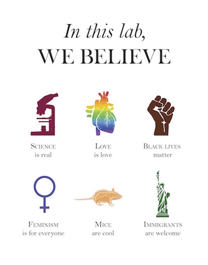

The Prescher group believes that an equitable, diverse, and inclusive work environment allows lab members to reach their highest potential and achieve greater scientific excellence.
Our group welcomes and encourages scientists of all cultural and socioeconomic backgrounds, races, religions, ages, disability statuses, veteran statuses, sexual orientations, and gender identities or expression to join our lab.
1. Recognizing implicit biases & privileges in our field that prevent equal opportunities.
2. Educating ourselves via participation in campus-wide seminars and in diversity discussions at weekly group meetings.
3. Committing to recruiting and mentoring more students through programs that increase the training and success of underrepresented groups in STEM.
4. Expanding participation of underrepresented groups in STEM outreach programs.
5. Promoting and advocating a creative, save, and inclusive working environment.
Diversity, Equity, and Inclusion in the Department of Chemistry
UCI End Racism Initiative (including working groups)
Chemistry Anti-Racism Collective (ChemARC)
National Organization for the Professional Advancement of Black Chemists and Chemical Engineers (NOBCChE @ UCI)
Society for Advancement of Chicanos and Native Americans in Science (SACNAS @ UCI)
Empowering Women in Organic Chemistry (EWOC) - SoCal Chapter
Find out more about the image above or make your own here.